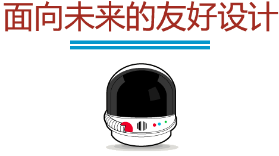

面向未来的友好设计 - 资源
下面是一些思考和应用“面向未来的友好设计”的设计方法，欢迎你来扩展和补充更多资源
呈现
Letting Go
The Coming Zombie Apocalypse
Multiscreen Patterns
First-Person User Interfaces
Networked Consumer Device Platforms
环境
On Mobile Context
There Is No Mobile Web
A Wider Context
Context
The Mobile Context
It's About People, Not Devices
内容
Structured Content First
Structured Content, Shifting Context
Content First?: Semantics, Structure, and Why We Should Care
方法
Mobile First
Responsive Web Design
COPE: Create Once, Publish Everywhere
Integration Across Networked Devices
Responsive & Responsible
(pdf)
首页
思考
参与
资源